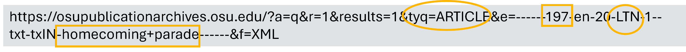

import requests
url="https://library.osu.edu" #INSERT URL HERE
response=requests.get(url)
text=response.text # This returns the response content as text
bytes=response.content # This returns the response content as bytes.Lesson 1. The Lantern
Web scraping and APIs are popular methods for collecting data from websites. Webscraping involves directly parsing a website’s HTML, allowing extraction of a wide range of data available on a page. Webscraping, however, introduces complexity to a project, especially if the website’s data is not consistently structured. APIs provide structured data and detailed documentation for querying the website and filtering results. They are generally easier to use but may come with restrictions, such as limits on the number of requests per day or the number of records you can retrieve.
In publication since 1881, The Lantern is The Ohio State University’s award-winning student newspaper. The Lantern Digital Archives includes all articles, illustrations, and advertisments published in The Lantern between 1881 and 2018.
Important!
The online archive of Ohio State University’s student newspaper The Lantern is accessible for research and educational purposes only. Copyright and other restrictions may apply. Users must obtain the necessary permissions to reprint, reproduce, or otherwise use this material.
This lesson introduces BeautifulSoup, a Python library used to parse XML and HTML documents. We will use BeautifulSoup to extract elements from The Lantern’s XML.
Data skills | concepts
- Search parameters
- XML
- Web scraping
Learning objectives
- Identify search parameters and understand how they are inserted into a url.
- Navigate document, element, attribute, and text nodes in a Document Object Model (DOM).
- Extract and store XML elements.
This tutorial is designed to support multi-session workshops hosted by The Ohio State University Libraries Research Commons. It assumes you already have a basic understanding of Python, including how to iterate through lists and dictionaries to extract data using a for loop. To learn basic Python concepts see Python - Mastering the Basics tutorial.
LESSON 1
Step 1. Copyright | Terms of Use
Before starting any webscraping or API project, you must
Review and understand the terms of use.
Fair Use
Limited use of copyrighted materials is allowed under certain conditions for journalism, scholarship, and teaching. Use the Resources for determining fair use to verify your project is within the scope of fair use. Contact University Libraries Copyright Services if you have any questions.
Check for robots.txt directives
robots.txt directives limit web-scraping or web-crawling. Look for this file in the root directory of the website by adding /robots.txt to the end of the url. Respect these directives.
- Go to the OSU Publication Archives website
- . Where is the Copyright Notice for this resource?
- What are the terms of use?
The Copyright Notice for The Ohio State University’s online archive of The Lantern student newspaper can be found on the bottom right of the OSU Publication Archives website. The Terms of use are listed separately at the bottom left.
Note:
The Ohio State University provides the online archives of Ohio State’s student newspaper The Lantern, the student yearbook The Makio, and alumni magazines for research and educational purposes only. The Terms of Use specify that unauthorized mass downloading or scraping into any format is prohibited. For this lesson, please limit your search results to scrape no more than 100 records.
Step 2. Is an API available?
APIs can simplify data collection from a website by returning structured data such as JSON or XML. Examples of APIs include:
To determine if an API is available, try searching for the name of the website and “API” or “documentation.” If an API is available, read the terms of use and consider factors like rate limits, costs, and access restrictions.
If an API is not available, that’s okay. Data collection might be a bit more complex, but always remember to respect copyright and terms of use.
Tip:
The OSU Publication Archives website is powered by Veridian software, enabling full-text searching of the Libraries digital collections possible. To output a search results from The Lantern to XML, simply add &f=XML to the end of your url. See the Veridian XML Interface documentation to learn more about this service.
Step 3. Examine search URL
To identify search parameters and insert your parameters into a url, first try searching the OSU Publication Archives website for homecoming parade. Adjust the filters on the left to show results for the decade 1970-1979, publication The Lantern, and category Article.

Once you’ve set your filters, you should have 51 results. The first 20 search results are displayed on page 1.
Take a look at the search URL. As you’ve searched for homecoming parade, the decade 1970-1979, publication The Lantern and category Article, the Veridian software has constructed a server request and inserted your parameters into the url.

Scroll to the bottom and click on page 2 to see search results 21-40. Note that the search result has changed to r=21.

Return to page 1 of your search, scroll to the right end of your search URL and add the characters &f=XML to the end of the string. By adding &f=XML to the request parameters, the server returns structured XML output.


Step 4. Inspect the elements
XML and HTML are tree-structured documents. When you request a search URL, it retrieves an HTML or XML page from a server. The browser then downloads the page into local memory and parses the HTML or XML for display.
The Document Object Model (DOM) respresents the overall tree-structure of the XML or HTML document. For example, in the XML document shown in Step 2 above: - VeridianXMLResponse represents the document node. - All XML elements within VeridianXMLResponse are element nodes. - There is some HTML present in the SearchResultSnippetHTML node. - There are no XML attribute nodes, but there are HTML attribute nodes in the SearchResultSnippetHTML node. - Text between the XML elements are text nodes.
The tree is hierachically structured and each tree branch ends with a node. Each node contains objects, and nodes can be nested within nodes.
Step 5. Identify Python libraries for project
To gather XML and HTML data from websites and APIs, you’ll need several Python libraries. Some libraries handle web server requests and responses, while others parse the retrieved content. Libraries like Pandas and CSV are used to store and output results as .csv files.
requests
The requests library retrieves HTML or XML documents from a server and processes the response.
BeautifulSoup
BeautifulSoup parses HTML and XML documents, helping you search for and extract elements from the DOM. The first argument is the content to be parsed, and the second specifies the parsing library to use.
html.parserThe default HTML parserlxmla faster parser with more features*xmlparses XMLhtml5libfor HTML5 parsing*
🔗 Additional keyword arguments (**kwargs) are available. See the BeautifulSoup documentation.
import requests
from bs4 import BeautifulSoup
url="https://library.osu.edu" #INSERT URL HERE
response=requests.get(url).content
soup=BeautifulSoup(response, 'xml')Other Python libraries for parsing include:
Each library has its strengths and weaknesses. To learn more about different parsing tools read Anish Chapagain’s Hands-On Web Scraping with Python, 2nd edition
*Verify that lxml or html5lib is installed in your Anaconda environment before using.
csv
The csv module both writes and reads .csv data.
Sample workflow
import csv- Create an empty list named dataset
- Assign .csv headers to a list named columns
- Define the writeto_csv function to write results to a .csv file
- Gather variables
- For each row of data, append a list of variables following the order of the .csv headers to the dataset list.
- Use the writeto_csv function to write results to a .csv file
import csv
##### STEP 1 - CREATE EMPTY DATASET AND DEFINE CSV HEADINGS #####
dataSet=[]
columns=['name','pet','age','profession'] # for CSV headings
##### STEP 2 - DEFINE FUNCTION TO WRITE RESULTS TO CSV FILE #####
def writeto_csv(data,filename,columns):
with open(filename,'w+',newline='',encoding="UTF-8") as file:
writer = csv.DictWriter(file,fieldnames=columns)
writer.writeheader()
writer = csv.writer(file)
for element in data:
writer.writerows([element])
name="Stanley"
pet="dog"
age=8
profession="chipmunk control"
dataSet.append([name, pet, age, profession])
writeto_csv(dataSet,'data/pets.csv',columns)time.sleep()
Most APIs limit the number of records you can request per second. time.sleep( ) suspends your program for a specified number of seconds.
import time
time.sleep(5)datetime
It is good practice to include a last_updated column in any dataset you’ve created after gathering HTML or XML data. The datetime module can be used to identify the date you last ran your Python program.
from datetime import date
today = date.today()
last_updated=todayStep 6. Write and test code
After examining the copyright and terms of use for the website, determining the availability of an API, examining the search URL, inspecting the XML elements, and identifying suitable Python libraries for the project, the final step is to write the code. It is recommended to use an interactive development environment (IDE) such as Visual Studio Code or Spyder for this task. IDEs provide quick feedback as you iteratively create your code, explore your data, and more.
-
Search the OSU Publication Archives website for
homecoming parade. -
Adjust the filters on the left to show results for the decade
1970-1979, publicationThe Lantern, and categoryArticleand output the search results to&f=XMLto the search url. - Write a Python script to retrieve the XML output from the server and process the response.
import requests
url="https://osupublicationarchives.osu.edu/?a=q&r=1&results=1&tyq=ARTICLE&e=------197-en-20-LTN-1--txt-txIN-homecoming+parade------&f=XML"
response=requests.get(url).contentUsing BeautifulSoup
Various methods and approaches may be used to gather and extract XML elements using BeautifulSoup. First we ask BeautifulSoup to search the tree to find the element nodes we identified in Step 4. Helpful methods include:
.find_all( )
Gathers all instances of a tag (i.e. element) and returns a response object. Each instance of the tag is then examined using a for loop.
find_all(name, attrs, recursive, string, limit, **kwargs)Example:
import requests
from bs4 import BeautifulSoup
url="https://osupublicationarchives.osu.edu/?a=q&r=1&results=1&tyq=ARTICLE&e=------197-en-20-LTN-1--txt-txIN-homecoming+parade------&f=XML"
response=requests.get(url).content
soup=BeautifulSoup(response, 'xml')
logical_sections = soup.find_all("LogicalSection")
for each_section in logical_sections:
result_number = each_section.SearchResultNumber.stringNote that each_section.SearchResultNumber in the example above is equivalent to each_section.find_all("SearchResultNumber"). Appending .string to each_section.SearchResultNumber extracts the text between the tags for SearchResultNumber.
Tip:
Learning to navigate tags with BeautifulSoup can be difficult at first. Try using Copilot in tandem with BeautifulSoup’s documentation to help you both identify and understand how to apply useful methods for your project.
Example: Ask Copilot what is the difference between tag.string and tag.text in BeautifulSoup.
.find( )
Gathers the first instance of a tag.
find(name, attrs, recursive, string, **kwargs).find_next( ) and .find_all_next( )
Gathers the following instance of a named tag.
find_next(name, attrs, string, **kwargs)
find_all_next(name, attrs, string, limit, **kwargs)attributes
name[attr]Tags can have any number of attributes.
Example:
href is an attribute of an <a href="url"> tag. To find an `href attribute value:
a['href']-
- Examine the XML structure and identify the nodes for the following elements:
- unique_id
- article_title
- article_type
- document_date
- Write a Python script that uses csv and BeautifulSoup to gather and store these elements. Focus on the first 20 search results.
- Examine the XML structure and identify the nodes for the following elements:
# 1. Import libraries
import requests
import csv
from bs4 import BeautifulSoup
# 2. Create a function to write search results to csv
def writeto_csv(data, filename, columns):
with open(filename, 'w+', newline='', encoding="UTF-8") as file:
writer = csv.DictWriter(file, fieldnames=columns)
writer.writeheader()
writer = csv.writer(file)
for element in data:
writer.writerows([element])
# 3. Define headers for final dataset
columns=['result_number','unique_id','artile_title','article_type','document_date']
#4. Create empty dataset to store each row of data for csv file
dataset = []
#5. Retrieve the XML
url="https://osupublicationarchives.osu.edu/?a=q&r=1&results=1&tyq=ARTICLE&e=------197-en-20-LTN-1--txt-txIN-homecoming+parade------&f=XML"
response=requests.get(url).content
#6. Parse the content with Beautiful Soup
soup = BeautifulSoup(response, 'xml')
logical_sections = soup.find_all("LogicalSection")
for each_section in logical_sections:
result_number = each_section.SearchResultNumber.string
unique_id = each_section.find("LogicalSectionID").string
article_title = each_section.find("LogicalSectionTitle").string
article_type = each_section.find("LogicalSectionType").string
document_date = each_section.find("DocumentDate").string
dataset.append([result_number,unique_id,article_title,article_type,document_date]) #adds a list of variables for each section to the dataset
#7. Use the writeto_csv function defined in #2 to create the final .csv file with each row
writeto_csv(dataset,'data/lantern_results.csv',columns) #uses the function defined in #2 to create the final .csv file with each row
Modify your code to gather search results 1-51.
# 1. Import libraries
import requests
import csv
from bs4 import BeautifulSoup
# 2. Create a function to write search results to csv
def writeto_csv(data, filename, columns):
with open(filename, 'w+', newline='', encoding="UTF-8") as file:
writer = csv.DictWriter(file, fieldnames=columns)
writer.writeheader()
writer = csv.writer(file)
for element in data:
writer.writerows([element])
# 3. Define headers for final dataset
columns=['result_number','unique_id','article_title','article_type','document_date']
#4. Create empty dataset to store each row of data for csv file
dataset = []
#5. Retrieve the XML
## modify the url to increment r= by 20. Move response variable to the for loop below.
url1="https://osupublicationarchives.osu.edu/?a=q&r="
url2="&results=1&tyq=ARTICLE&e=------197-en-20-LTN-1--txt-txIN-homecoming+parade------&f=XML"
#6. Create a for loop to search each page of results. Use range(start, stop, step) to ask
# Python to increment i by 20 for each loop. The first SearchResultNumber (i.e. start) is 1. The last
# SearchResultNumber (i.e. stop) is 51. Construct a new url for the response variable.
# Parse the response content with Beautiful Soup.
for i in range(1,51,20):
response=requests.get(url1+str(i)+url2).content
soup = BeautifulSoup(response, 'xml')
logical_section = soup.find_all("LogicalSection")
for each_section in logical_section:
result_number = each_section.SearchResultNumber.string
unique_id = each_section.find("LogicalSectionID").string
article_title = each_section.find("LogicalSectionTitle").string
article_type = each_section.find("LogicalSectionType").string
document_date = each_section.find("DocumentDate").string
dataset.append([result_number,unique_id,article_title,article_type,document_date]) #adds a list of variables for each section to the dataset
#7. Use the writeto_csv function defined in #2 to create the final .csv file with each row
writeto_csv(dataset,'data/lantern_results.csv',columns) #uses the function defined in #2 to create the final .csv file with each row The default search output provide structured bibliographic metadata for each homecoming parade article. How might you modify your code to gather the publication_text for each article?
# 1. Import libraries
import requests
import csv
from bs4 import BeautifulSoup
# 2. Create a function to write search results to csv
def writeto_csv(data, filename, columns):
with open(filename, 'w+', newline='', encoding="UTF-8") as file:
writer = csv.DictWriter(file, fieldnames=columns)
writer.writeheader()
writer = csv.writer(file)
for element in data:
writer.writerows([element])
# 3. Define headers for final dataset
columns=['result_number','unique_id','artile_title','article_type','document_date']
#4. Create empty dataset to store each row of data for csv file
dataset = []
#5. Retrieve the XML
## modify the url to increment r= by 20. Move response variable to the for loop below.
url1="https://osupublicationarchives.osu.edu/?a=q&r="
url2="&results=1&tyq=ARTICLE&e=------197-en-20-LTN-1--txt-txIN-homecoming+parade------&f=XML"
#6. Create a for loop to search each page of results. Use range(start, stop, step) to ask
# Python to increment i by 20 for each loop. The first SearchResultNumber (i.e. start) is 1. The last
# SearchResultNumber (i.e. stop) is 51. Construct a new url for the response variable.
# Parse the response content with Beautiful Soup.
for i in range(1,51,20):
response=requests.get(url1+str(i)+url2).content
soup = BeautifulSoup(response, 'xml')
logical_section = soup.find_all("LogicalSection")
for each_section in logical_section:
result_number = each_section.SearchResultNumber.string
unique_id = each_section.find("LogicalSectionID").string
article_title = each_section.find("LogicalSectionTitle").string
article_type = each_section.find("LogicalSectionType").string
document_date = each_section.find("DocumentDate").string
dataset.append([result_number,unique_id,article_title,article_type,document_date]) #adds a list of variables for each section to the dataset
#7. Use the writeto_csv function defined in #2 to create the final .csv file with each row
writeto_csv(dataset,'data/lantern_results.csv',columns) #uses the function defined in #2 to create the final .csv file with each row
#8. Go back to your original search HTML by removing &f=XML from your search url and click on article #1: "Whose homecoming?"
# Note the unique_id LTN19781023-01.2.24 for the article and the position of this unique_id in the search url. Try using the url without
# the parameters listed after the unique_id. 'https://osupublicationarchives.osu.edu/?a=d&d=LTN19781023-01.2.24' Append &f=XML to the
# end of this url to retrieve XML for this publication from the server. Note that publication_text is present in the node
# LogicalSectionTextHTML.
# Now use a for loop to iterate through the urls for each unique_id listed in your dataset variable to gather the publication_text. But
# first, create a new list of column headers and a new dataset variable to pass into your writeto_csv function. This will allow you to output
# your results to a new .csv file.
columns2=['unique_id','article_title','article_type','publication_date','publication_text']
dataset2=[]
#sample_url='https://osupublicationarchives.osu.edu/?a=d&d=LTN19781023-01.2.24&f=XML'
base_url='https://osupublicationarchives.osu.edu/?a=d&d='
for each_list in dataset:
unique_id=each_list[1]
article_title=each_list[2]
article_type=each_list[3]
publication_date=each_list[4]
url=base_url+unique_id+'&f=XML'
xml=requests.get(url).content
soup=BeautifulSoup(xml,'xml')
publication_text=soup.find("LogicalSectionTextHTML").text
dataset2.append([unique_id,article_title,article_type,publication_date,publication_text])
writeto_csv(dataset2,'data/lantern_text.csv',columns2)